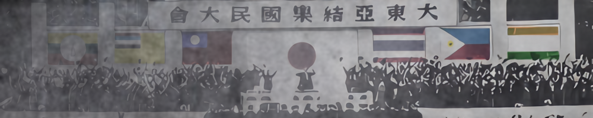

開発情報
開発者
| 役職名 | 管理人 | 担当者 |
|---|---|---|
| GEACPS代表 | 本MODにおける代表者であり、総合開発部門高等管理人が兼任する。 | Albert |
| 総合開発部門高等管理人 | 本MODにおけるシナリオ、コーディング以外における管理人である。 | |
| 原案記述部門高等管理人 | 本MODシナリオにおける管理人である。 | エドワード8世 |
| 実装開発部門高等管理人 | 本MODコーディングにおける管理人である。 | Blitz Reisdusche |
| 地域管理人 | 地域ごとの管理人である。 | 亜州：神子さん 欧州：エドワード8世 阿州：Albert 北米州：なし 南米州：なし 大洋州：BakeMe |
| 補佐管理人 | 管理人が任命した補佐である。 | 総合開発部門-翻訳補佐：H_Jonathan 原案作成部門-前史補佐：神子さん 実装開発部門-技術補佐：ばいおず |